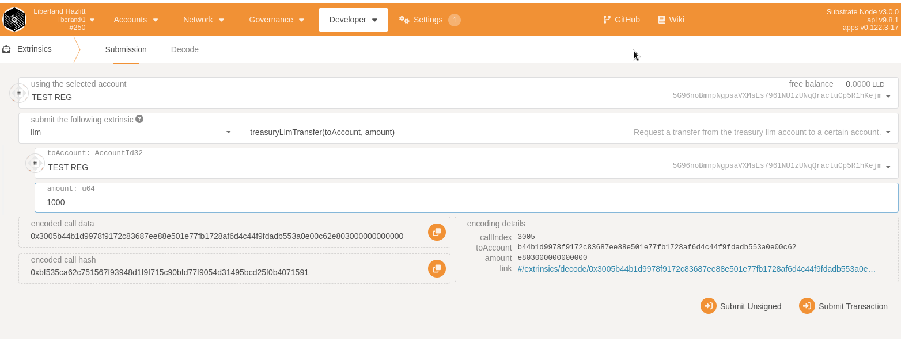
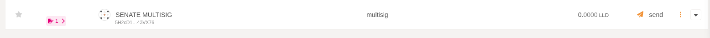
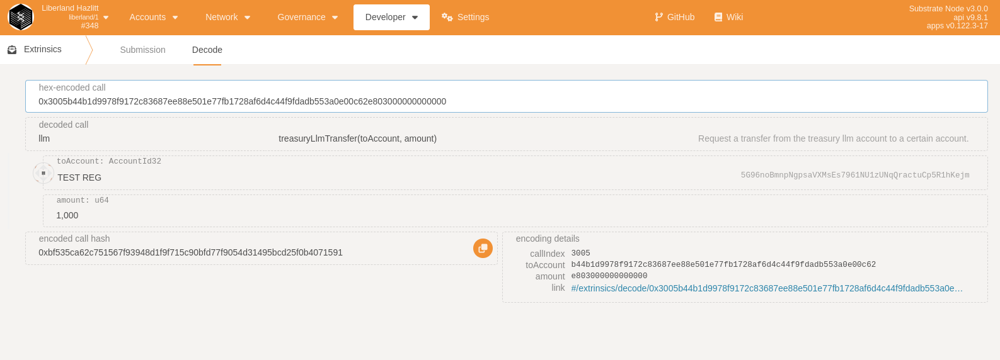

Documentation
Documentation for Liberland's Blockchain
Add documetation by submiting a pull request to this repository
Useful links:
Access using polkadot.js
Voting with LLM on-chain asset
Because of the design and implementation of LLM, LLM is not a native substrate token. Rather, LLM is a custom implementation
of an on-chain asset. Liberland's chain comes with a custom democracy voting integration, being the first chain that allows users to vote with
on-chain assets instead of the native substrate balances.
Read more about on-chain assets here: https://marketplace.substrate.io/pallets/pallet-assets/
Indept LLM documentation: https://github.com/liberland/liberland_substrate/blob/main/frame/llm/Readme.md
Setup enviroment:
We recommend that you manually clone the github repository and build it:
git clone https://github.com/liberland/liberland_substrate && cd liberland_substrate/ && cargo build --release
Run the node in dev mode to make things easy:
./target/release/substrate --dev --
Navigate to polkadot.js and choice local node.
Become an on-chain citizen
In order to vote or interact with the political system, a user needs to become and on-chain citizen. The requirements for being a citizen is:
- Approved roled with the citizen field
- Pooled llm
Politic pooling LLM
Get some LLM:
Navigate over to polkadot.js > Developer > extrinsics > llm > fakesend
Allocate LLM for politics:
polkadot.js > Developer > extrinsics > llm > politicslock
Check your LLM balance by going to Developer > chainstate > llm > select llmPolitics and llm.llmBalance
LLMPolitics
This is the amount of LLM you have allocated for Politics, these llm can not be used for any type of non-voting functionality
LLMBalance
This is your liquid LLM balance
Unpool your llm with :
polkadot.js > Developer > extrinsics > llm > politicsunlock
Set on-chain role
Once you have pooled LLM you can now go to polkadot.js > Developer > extrinsics > identity > setIdentity
Make sure you set the Citizenfield to raw and put 1 as the input.
Submit the transaction!
Request judgement:
polkadot.js > Developer > extrinsics > identity > requestJudgement
regIndex: 0
maxFee: 500
Note: if your testing this in a local --dev enviroment, you need to use the sudo ac(Alice) to set a registra:
Sudo > identity > addRegistrar
Now you need to either wait for someone to give you a judgement of Knowngood or do it yourself:

Now when you have become an on-chain citizen you can interact with the politics system with your pooled llm.
When you vote your pooled LLM will become locked until the vote is over.
Check the amount of LLM that are currently actively used in votes:
Developer > chainstate > llm > select llmPoliticsLock
Head over to the Democracy tab and start interacting with your pooled llm.
Senate guide
Pre requirements:
Read LLM documentation
Read How to create a multisignature wallet on liberland chain
Senate is the only entity that can send LLM from the treasury's account.
Multisig:
The senate consist of the 2/4 Multisig: "5DDRSE9Qh2aw8X1P6hEv2AZx61Wa3W7HTc3nk7bLjq93z1ga"
$ subkey inspect "0xdb93a8bc25102cb5c7392cbcc1b0837ece2c5f24436124522feb9bd6010bf780"
Secret Key URI `0xdb93a8bc25102cb5c7392cbcc1b0837ece2c5f24436124522feb9bd6010bf780` is account:
Secret seed: 0xdb93a8bc25102cb5c7392cbcc1b0837ece2c5f24436124522feb9bd6010bf780
Public key (hex): 0x32e229a871ecf6987d9fdaf5f64ca8f7c3e25667ef9cc1f9812aa4090182c560
Account ID: 0x32e229a871ecf6987d9fdaf5f64ca8f7c3e25667ef9cc1f9812aa4090182c560
Public key (SS58): 5DDRSE9Qh2aw8X1P6hEv2AZx61Wa3W7HTc3nk7bLjq93z1ga
SS58 Address: 5DDRSE9Qh2aw8X1P6hEv2AZx61Wa3W7HTc3nk7bLjq93z1ga
Members of the Multisig:
N: 5GEUDCyZrzPy1A6Kn288pHZFDtVhfYWvYmU1iTUPMg6YSVTE
M: 5FRhNgNVap5orCPvjoV1YbWGR3Zi5AsFUz6oEACf6fuvkinu
V: 5DwWxf1NzMpp4D3jv1KY176DwYRRkKDguprmMw4BjieCX2ZK
dev: 5CCi1rPi7cphC6iE9mWkYvbLf57b9N233nFG8hM5zjvYZpLi
NOTE: IF YOUR ADDRESS IS NOT LISTED HERE OR NOT PART OF THE SENATE MULTISIG, YOU CAN NOT USE THIS FUNCTIONALITY
Check Multisig manually by going to polkadot.js > accounts > + Multisig and adding the addresses above.
2 out of 4 signers must approve each transaction.
Make a treasury transfer with senate
Head over to Polkadot.js > Developer > extrinsics > LLM > treasuryLLMtransfer

Use the Multisig account as the source and select the reciever(the reciever can be any account on the chain)
Press submit transaction and copy the "multisig call data" and the "call hash" before you press "Sign and submit" Copy the call multisig call data and end it to the other signers
Once your transaction has been created from the senate wallet, you can see the transactions as waiting in the "Accounts" tab. 
Verify the call data:
Head over to Developer > extrensic > decode and check each call data:

Once the transaction is approved, you can head over to polkadot.js > developer > chain state > llm > LLMbalance and check the balance of the reciever
StarLight is a testnet
If Hazlitt is Polkadot then Star Light is Kusama
Star Light is running on develop branch:
https://github.com/liberland/liberland_substrate/commit/cc98f31af6b1a61a82befd617ecc537195676171
STEP 1:
$ git clone https://github.com/liberland/liberland_substrate
$ cd liberland_substrate && git checkout develop && cargo build --release
STEP 2:
Generate your validator keys: https://github.com/liberland/liberland.github.io/blob/main/docs/run_validator.md#generate-keys
Submit your keys: https://github.com/liberland/liberland.github.io/blob/main/docs/run_validator.md#submit-keys
STEP 3:
Sync your validator node:
./target/release/substrate --chain specs/starlight.raw --validator --in-peers 256
--base-path /home/<ENTER USER>/starlight_chain/
--bootnodes /ip4/162.55.230.228/tcp/1666/p2p/12D3KooWFztTwRSs6hhRNPcwxer5ueQDJYrSeJknPwZu2diVzbTm
--force-authoring
NOTE: DONT FORGET TO RESTART YOUR VALIDATOR AFTER YOU SUBMITTED THE KEYS TO MAKE SURE THEY ARE LOADED CORRECTLY
STEP 4:
Once your validator has synced up you want to call "author_rotateKeys":
curl -H 'Content-Type: application/json' --data '{ "jsonrpc":"2.0", "method":"author_rotateKeys", "id":1 }' 127.0.0.1:9933
Take the output of the result and head over to Polkadot.js > Network > Staking > Accounts > + Validator to add your validator
Step 5:
Nominate your validator!
Ask your friends to select your validator and nominate your validator. the more nominations you got the higher chance you have to get selected.
Step 6:
Wait! Now all you gotta do is wait, you can see in Polkadot.js that your validator is now queued up for being in an active session/era
How to run a validator
Note:
DO NOT expose your validators rpc port publicly on the internet. Treat validators with more care than full nodes
You do not need to a run a validator to earn LLD staking rewards. As a user you can simply become a nominator and stake your coins without needing to run a validator.
THIS IS FOR HAZLITT CHAIN
Prapare your machine to be able to run Rust, Substrate and Cargo
https://docs.substrate.io/install/
compile the node with cargo:
git clone https://github.com/liberland/liberland_substrate && cd liberland_substrate && cargo build --release
install subkey:
cargo install --force subkey --git https://github.com/paritytech/substrate --version 2.0.2 --locked
Generate keys:
Subkey generate command will return a secret mnemonic phrase and other keys similar to:
$ subkey generate
Secret phrase: power popular buffalo predict renew gasp stay steak blanket opinion current stove
Secret seed: 0x542c112cb6130d531ba9751cb209d8c3782c0158783562e1336b1628e834354a
Public key (hex): 0xbefda47b8e41d8bd1642d6cdf4560b914915466ead377d7646a805cae9344141
Account ID: 0xbefda47b8e41d8bd1642d6cdf4560b914915466ead377d7646a805cae9344141
Public key (SS58): 5GP8JWw8Vg1VK42h1D2mXxBt5AQ7MDGdAH4F87QGoWCuD5nr
SS58 Address: 5GP8JWw8Vg1VK42h1D2mXxBt5AQ7MDGdAH4F87QGoWCuD5nr
You will need the following keys:
- stash keys(use in polkadot.js) (ed25519 or sr25519)
- controller(use in polkadot.js) keys (ed25519 or sr25519)
- Babe keys(submit to validator) (sr25519)
- Grandpa keys(submit to validator) (ed25519)
- ImOnline keys(submit to validator) (sr25519)
- AuthorityDiscovery keys(submit to validator) (sr25519)
Grab your mnemonic seed phrase and use subkey inspect to generate the next keys, and save them in a safe place:
Generate grandpa, babe, audi and imol keys for your validator
$ subkey inspect "<SECRET_PHRASE>//grandpa" --scheme ed25519
$ subkey inspect "<SECRET_PHRASE>//babe" --scheme sr25519
$ subkey inspect "<SECRET_PHRASE>//im_online" --scheme sr25519
$ subkey inspect "<SECRET_PHRASE>//authority_discovery" --scheme sr25519
Sync the node
Sync your node without the validator flag to the latest finalized block:
./target/release/substrate --chain specs/latest_hazlitt_raw --bootnodes /ip4/162.55.230.230/tcp/30333/p2p/12D3KooWPhfahTY7p8pRshMwPbEhp5zAahyu4TwbjXqgGEUoavpr --base-path /tmp/hazlitt --unsafe-pruning --pruning=1000
Submit keys
curl http://localhost:9933 -H "Content-Type:application/json;charset=utf-8" -d '{
"jsonrpc":"2.0",
"id":1,
"method":"author_insertKey",
"params": [
"babe",
"SEEDGOESHERE//babe",
"PUBKEY"
]
}'
curl http://localhost:9933 -H "Content-Type:application/json;charset=utf-8" -d '{
"jsonrpc":"2.0",
"id":1,
"method":"author_insertKey",
"params": [
"gran",
"SEEDGOESHERE//grandpa",
"PUBKEY"
]
}'
curl http://localhost:9933 -H "Content-Type:application/json;charset=utf-8" -d '{
"jsonrpc":"2.0",
"id":1,
"method":"author_insertKey",
"params": [
"imol",
"SEEDGOESHERE//im_online",
"5Ehp3to58kyKEpZd8PyXGWr2TpXVCS1b31W5TkiLKvxr4CJn"
]
}'
curl http://localhost:9933 -H "Content-Type:application/json;charset=utf-8" -d '{
"jsonrpc":"2.0",
"id":1,
"method":"author_insertKey",
"params": [
"audi",
"SEEDGOESHERE//authority_discovery",
"PUBKEY"
]
}'
check that keys have been added
check the directory you specified with --base-path:
$ ls /tmp/hazlitt/chains/hazlitt/keystore/
restart node with validator flag:
./target/release/substrate --chain specs/hazlittRaw.json --bootnodes /ip4/162.55.230.230/tcp/30333/p2p/12D3KooWPhfahTY7p8pRshMwPbEhp5zAahyu4TwbjXqgGEUoavpr --base-path /tmp/hazlitt --unsafe-pruning --pruning=1000 --validator
Rotate keys
Run the following command and save the 'result' parameter it returns
curl -H 'Content-Type: application/json' --data '{ "jsonrpc":"2.0", "method":"author_rotateKeys", "id":1 }' 127.0.0.1:9933
Submit validator in polkadot
Head over to polkadot.js and Go to Network > Staking > Accounts > + Validator set your stash and controller and paste in the result from the previous step on the next page. click "Click "Bond & Validate" and your done! Your validator should soon come online
Final Step:
Once your validator is up and running and you have a solid track record of no downtime.
You can ask other LLD holders to nominate your validator node.
Build, run & test the Liberland Blockchain Node using source code
This guide will walk you through:
- building the blockchain node from source code,
- running a local development instance, which spawns a new single-node testnet,
- interacting with development instance,
- running automated tests.
Install dependencies
For Ubuntu & Debian derivatives:
sudo apt install build-essential git clang curl libssl-dev llvm libudev-dev make protobuf-compiler
Next install Rust itself. Run and follow prompts:
curl --proto '=https' --tlsv1.2 -sSf https://sh.rustup.rs | sh
And switch to Rust Nightly:
rustup default nightly
See Substrate docs for detailed guide and other platforms.
Fetch latest source code
Development of Liberland Blockchain Node happens in two branches:
main, which contains latest stable releasedevelop, which contains latest, not yet released as stable changes
To fetch source code, run the following (you may replace main with develop if desired):
git clone https://github.com/liberland/liberland_substrate.git -b main
cd liberland_substrate
Build the node
To build the node, run:
cargo build --release
Note that this will likely take a long time. If everything goes correctly, you'll see:
Finished release [optimized] target(s)
And will be able to run the node using built executable (output might differ slightly):
user@machine:~/liberland_substrate$ ./target/release/substrate --version
substrate 3.0.0-dev-41cd30e9e7d
Run and interact with development instance
To run a development instance of Liberland node, execute:
cargo run --release -- --dev
Development instance is a single-node testnet, in which standard development accounts (Alice, Bob, etc.) are endowed with assets. To interact with it, visit Polkadot.js Apps.
Run automated tests
Liberland Blockchain node is comprehensively covered with automated unit tests. To run them, execute:
cargo test --release --features runtime-benchmarks
As these typically take a long time, you can also choose to run tests only for specific pallets. Here's example for the legislation pallet:
cargo test --release --features runtime-benchmarks -p pallet-liberland-legislation --lib
Run a Liberland Node with Docker
Prequirements: This guide assumes your running a Linux based operating system and have Docker already installed.
Download the docker image
$ docker pull laissezfaire/liberland-node:0.3.2
Select the chainspec
Select the chainspec for the chain you wish to connect to from liberland_substrate/specs/
Check that the image is downloaded
$ docker images -a
Run node
- Forward ports 9933 and 9944 to local socket(-p)
- "-d", detach the docker image and run it as a daemon
- "-e", set the enviromental variables for the node(https://github.com/liberland/liberland.github.io/blob/main/docs/run_validator.md#restart-node-with-validator-flag), modify this based the node flags(--) you want to define
$ docker run -p 9933:9933 -p 9944:9944 -d \
-v /home/user/liberland/:/data laissezfaire/liberland-node:0.3.2 liberland_node \
-e "--chain starlight" -e "--bootnodes /ip4/162.55.230.228/tcp/1666/p2p/12D3KooWFztTwRSs6hhRNPcwxer5ueQDJYrSeJknPwZu2diVzbTm"
Check that node is running:
$ docker ps
Connect to your node with polkadot.js
Head over to: https://polkadot.js.org/apps/#/explorer
Select local node on the right side
Link to node docker image:
https://hub.docker.com/r/laissezfaire/liberland-node
https://docs.google.com/document/d/1ntrT6bafTD2LfXUG9QLxOieogXELn9icN1y__EGfZ98/edit?usp=sharing
How to upgrade the chain
Prerequirements:
Read substrate official documentation
Read about webassembly and utilize "subwasm"
Watch Alex's runtime migrations video: https://www.youtube.com/watch?v=MQgDV37JrIY
Read about runtime migrations: https://github.com/apopiak/substrate-migrations
Step 1
Add your changes to the code repository and make sure your pallets are included in the runtime. Increment the spec_version by adding +1.
Compile your node
Step 2
Go over modifed changes made to the storage and apply storage migrations to convert the old types to the new once in the on_runtime_upgrade function
Note: Failing to migrate important storage changes will have a negative effect on the chain
Note: use logging to display what migrations kicked in
Step 3
Verify that the compiled wasm file looks good with subwasm and srtool(https://github.com/paritytech/srtool).
Step 4
Compile the node locally and use the current spec_version that is deployed on chain(check polkadot.js for last upgrade in chainstate)
Push the runtime upgrade either with as Sudo Call or as a democracy vote on your local instance.
If all is well and the pallet's interact good after the upgrade, go ahead to the next step
Step 5
Prep a release page for the node with the output from srtool and the hashes of the binary files, upload the wasm file aswell to the releases page.
Step 6
Push the upgrade on-chain
Links:
https://develop--substrate-docs.netlify.app/how-to-guides/v3/storage-migrations/basics/
https://docs.substrate.io/build/runtime-storage/
https://docs.substrate.io/build/upgrade-the-runtime/
Rust API docs
Liberland Blockchain Node contains thorough in-code documentation.
You can see latest deployment here:
See below for information on opening locally
Seeing Rust API docs locally
Assuming you have your development environment setup (see Build, Run & Test
guide), execute following in main liberland_substrate repo
directory:
cargo doc --open --no-deps -p pallet-llm -p pallet-liberland-legislation -p pallet-liberland-initializer